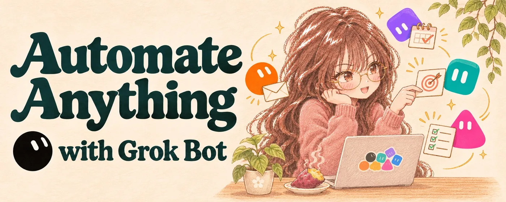
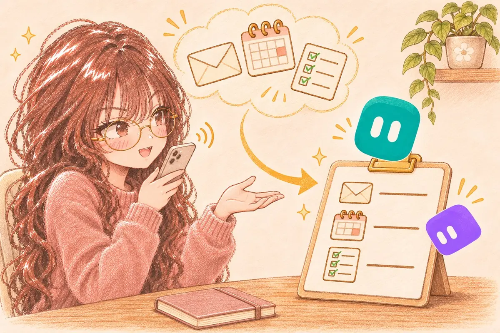

Grok Bot 团队的 Lauren Tan（@poteto）写了一篇面向非技术读者的长文。她认为，许多人还没用上 Grok Bot 的全部潜力，不是因为工具不够，而是因为「怎样把事情自动化」本身就不容易学会。她把方法说得很短：自动化由一个目标和一个过程组成；先想清楚最后要得到什么，再决定过程，也不要把填表、发邮件误认成目标本身。
正文里，她带着读者新建一只暂名为 Potato 的 Bot，用语音把做法倒给它，再让它用自己的话复述；然后把那些几乎不假思索就会做的判断也教给它，并接上反馈来源，让它自己改进。若希望它不必等你开口就开始做事，就在 Grok Bot 里设置例程。文末她说，自己把所会的自动化方法都教给了 Dr Eggbot，并在跟帖里给出新的 v2 模板。
以下为作者原文自述。文中对 Grok Bot 能力、自我改进和 Dr Eggbot 的说明，均按原文译出，不是产品测评。
宣布帖全文中译
作者 Lauren Tan · 2026-11-19 05:00（新加坡时间，UTC+8）发布于 X
我觉得很多人还没用上 Grok Bot 的全部潜力，因为「怎么把事情自动化」其实是一项很难学会的本事。我写了这篇，把我自己如何用 Grok Bot 自动化任何事情的方法拆开讲。
长文全文中译
《Automate Anything with Grok Bot》 · 作者 Lauren Tan

自动化这件事，就算每天都在做的人，也常常不容易做对。我想分享我自己在工作里和生活里怎么对待它，以及 Grok Bot 怎样能帮你去承担更有野心的目标。
一种思考方式
自动化其实只是一种人人都能学会的思考方式。它要求你系统、有条理地想问题：把事情拆成小步骤，同时始终把目标放在心里。
它由两部分组成：一个目标，和一个过程。
日常的例子是烤一个苹果派（这是目标）。你按食谱或过程走，步骤已经写清楚：买齐并处理好原料，组装、装饰，烘烤，放凉，等等。又如给瘪了的轮胎换新（同样是一个目标），你可能先得把车顶起来才能碰到轮胎，找到拆卸和更换的工具，再把一切装回去。
简单说：目标是你最后想得到的东西，过程是你怎么到达那里。
自动化也是同一件事：一个目标和一个过程，只不过多了某种「机器」——比如面包房用来一次烤很多苹果派的那些设备。或者说代码，也就是软件工程师过去用手写下来、让计算机去自动完成的那些事。关键是把通往目标的路径拆成步骤，再把过程自动化，这样你就不必每次都亲自去做。
Grok Bot 让每个人都能自动化
就在一两年前，自动化还只属于那些知道怎么造机器、组装机器或写代码的人。有了 Grok Bot，凡是能在计算机上完成的事，即使你不是技术背景、也不是软件工程师，现在也可以去自动化了。真正让人意外的是，计算机能做的事情远比你以为的多，包括那些你可能觉得 Bot 做不了的任务。
用 Grok Bot 开始把任务自动化，并不需要你会写代码。你可以用平常的话说明想要什么，再和你的 Bot 一起把步骤想清楚。Bot 可以替你写代码，也可以用它自己的电脑，去做几乎所有你能在自己的电脑或手机上做的事。
如果你不是技术背景，我想请你先把怀疑搁一搁。Bot 真的可以做你能在计算机上做的任何事。它可以移动自己的鼠标去点击，安装或连接到你每天使用的应用和软件，用自己的浏览器上网，替你参加会议并做笔记，还有更多。
而正因为我们现在的工作和生活有这么大一块依赖技术，也就意味着越来越多的工作可以改由 Bot 来做，好让你腾出手去关注别的事。
从目标开始
为了说得更具体，我们一起来建一个新 Bot，让它替你自动化一件事。打开 Grok Bot，新建一个 Bot，名字随你起。如果想不出名字，就先叫它 Potato，稍后再让它给自己起名。
在开始和 Bot 聊天之前：我一想到自动化，总是先想目标。我们到底想做成什么？
我常见的一个错误，是把过程当成了目标。比如，你在工作里可能已经有一套很清楚的办事流程。但目标并不是填完一张表，也不是发出一封邮件。那只是过程里的一步。
相反，要想最终的目标：这套过程是为了什么，它在业务里处在什么位置？它是在帮你增加收入（比如处理一笔销售、做新功能），还是在帮你降低成本（比如恰好订对库存量）？如果不确定，就和经理或同事聊聊，甚至可以请 Bot 帮你一起想清楚。
先把目标说清楚，是最好的起点，因为它让你和 Grok Bot 都盯住最终结果。你可能还会发现，Bot 也能想出把过程做得更高效的办法，所以不必过于执着某一种固定流程——它终究只是达到目的的手段。
目标一旦想清楚，就先向这个新 Bot 描述它，然后，如果你不想一直叫它 Potato，就请它给自己起个名字。
「嗨 Potato，这是我想让你负责的目标：＜目标＞。请根据它，给自己选一个名字和一张图片。」
下面是一些可以先告诉 Bot 的目标示例：
- 存钱，为了买新车、买房，或给孩子准备大学基金
- 为我的小生意安排新客户预约
- 改善小生意的客户体验，让他们留下好评
- 为小生意招聘新员工
- 收集产品反馈，好用来改进
- 为每周例会准备幻灯片
- 为产品开发新功能
如果不太确定该怎么描述目标，就请 Potato 来帮你。对它说：
「嗨 Potato，我想让你负责一个目标，但还不太确定怎样描述最好。你能不能向我提问、采访我，直到我们得到一个我满意的目标？」
过程
把目标告诉它之后，想一想如果是你自己做，会怎样达成这个目标，再请 Bot 看看哪些地方可以更高效。如果你更希望它严格按你的过程来做，也可以直接这样说。
把这些信息交给 Bot 最好的办法，是在 Grok Bot 里用语音输入，先说上一阵，把做好这件事需要知道的一切都倒出来，不必担心思绪是意识流，也不必先整理好。告诉它：
- 你通常会采取的步骤
- 你通常会留意、会盯住的事情
- 你做这件事时用的应用和工具
- 你如何检查工作做对了
- 你从哪里取得做这件事所需的信息（比如邮件、Slack/Teams、工单、某个应用或网站）
- 你从哪里得到做得如何的反馈（比如客户评价、同事反馈）
「Potato，我自己通常是这样完成这个目标的：＜过程＞
我希望你想一想，怎样才能把这件事完全从我手里接过去。开始之前，请先用简单的话复述你理解的目标和过程，好让我反馈并确认。我现在还不希望你开始执行，我们先把过程规划清楚。」
不必指望一遍就对。看看 Bot 怎么说，再补上更多信息来纠正它。这样来回几次，你就会得到一份自己满意的东西。然后可以让 Bot 继续，开始连接到它把这件事做对所需要的应用和工具。
如果你还想再进一步，也可以请它对照原来的目标审查这套过程，看能不能想出更好或更高效的做法。
「请对照我原来的目标审查我们的过程，如果看到能做得更好或更高效的办法，告诉我。」

把你的想法教给 Bot
解释过程时，很容易忘掉自己有多少事是几乎不假思索就做了的。如果你在为客户做预约，大概清楚哪些服务更耗时、谁能做哪项工作、预约之间何时该多留一点空档。这些判断对你来说可能理所当然，但你的 Bot 也需要这些背景。想一想：你自己做这件事时在注意什么，又是什么让你改用另一种做法。
告诉它这些信息从哪里来，以及你如何检查工作做对了。比方说，如果一封邮件和预约系统显示的时间不一样，它该信哪一个？预约也不是发出一封邮件就算完成。预约需要被正确保存，客户也需要收到确认。如果还在等细节，就让 Bot 把这件事记下来，好稍后再续，而不是一不小心又建了一个预约。
不必一开始就把所有可能的情况都讲完。先从几个真实例子开始，包括出过错、或你不得不改做法的那些。问 Bot 会怎么处理，再给它反馈。你也可以请它帮你找出自己还没讲到的地方。
「Potato，帮我找出这个过程里我还没告诉你的部分。请问我：我怎么做决定、信息从哪里来、我怎么检查工作、以及你什么时候应该来问我。一次只问一个问题，然后带我走几个例子，好让我在自动化之前给你反馈。」
让 Bot 自己改进自己
Bot 开始执行这套工作流之后，给它反馈、让它改进就很重要。最好的办法，是给它配备自己就能取得这些反馈的应用和工具。我的做法是想：如果是我自己在做这件事、并且想自我改进，我会怎么做。
比如，如果你的 Bot 在帮你管理新客户预约，一种让它自我改进的办法，是让它留意你的邮件、社交媒体，或 Google/Yelp 上的客户评价。它可以自己去看这些反馈，再主动提出改进过程的建议。
也许有位顾客在 Yelp 上说，等了很久才有人接待。如果 Bot 能自己去 Yelp 查这条信息，也能查到你当天关于这位顾客的记录，它就有可能看出哪里出了问题。
从这个角度看，你的业务越是数字化，对 Bot 和自动化就越有利。正是这些数据的可获得性，让 Bot 有能力提出更好的改进。而最妙的是，Grok Bot 还能为你把取得这些数据的工具做出来。比如你经营修车服务，可以请 Bot 做一个能在电脑和手机上用的应用，用来记录一次客户到访的细节。
如果你记下这些时间：
- 他们到达店里的时间
- 他们得以和服务人员交谈的时间
- 你接手他们车钥匙的时间
- 服务开始和结束的时间
你就能算出他们等了多久，也更能判断原因。这只是一个简单的例子，但关键教训是：能提供给 Grok Bot 的数据越多，它就越能帮到你、你的生意和工作。
如果有类似 ID 的东西——某种数字，或像电子邮件地址这样能给数据赋予身份的唯一文本——Bot 还可以在多个来源之间交叉对照。这可以是客户 ID 或邮箱、订单号、零件号、条码、员工编号，等等。如果你同时使用多个应用和服务，在这些工具里保持唯一且一致的 ID，会帮你把数据拼在一起，让 Bot 真正理解正在发生的事。
让 Bot 自动开始工作
下一件事是：Bot 该在什么时候动手？是邮件一到就开始，还是有人发来消息时，或按固定日程？在 Grok Bot 里，这要用例程来设置。
没有例程的话，Bot 只会在你开口时才做事。刚开始用 Bot 时，这样没问题；但如果你想把事情理顺，就得想办法让 Bot 自动去做，这样你自己就不再是瓶颈。
通常，工作会由某种触发引起，比如一封邮件或一条 Slack/Teams 消息。也可能按固定日程发生，比如每周一次，或隔天一次。无论哪种，只要你请 Bot 去设置，它就会去设置。
安装 Dr Eggbot
我把自己所会的、关于把工作自动化的一切都教给了 Dr Eggbot。所以，如果你想更进一步把工作自动化，就安装它，请它来帮你。Dr Eggbot 是一个 Bot 设计器——它会为你做出高质量的 Bot。
感谢阅读。
作者跟帖全文中译
同一线程 · 2026-11-19 05:01（新加坡时间，UTC+8）
另外还有一个新的 Dr Eggbot v2 模板可以安装。它带有新的技能，用来帮你把工作和生活自动化。它和旧模板不是同一个，所以请重新安装这一份，并让旧的 eggbot 把你想保留的东西转到新 Bot 里。
该模板的公开简介写着：Dr Eggbot v2 由 lauren 制作，用于设计紧凑、只做一件事的 Grok Bot；带一个你想卸下的工作来，它会就目标和过程采访你，然后做出一个能自己跑这件事的 Bot。简介里没有逐项列出这些新技能。作者说明它与旧模板不同，需要重新安装，并请旧的 eggbot 协助转移要保留的内容——以下均为原文自述。
英文原文
宣布帖
I think a lot of people aren't using Grok Bot to its full potential, because knowing how to automate things is actually quite a difficult skill to learn. I wrote this post to break down how I approach automating anything with Grok Bot!
长文《Automate Anything with Grok Bot》
Automation can be surprisingly hard to get right, even for people who do it every day. I’d like to share how I approach it, at work and in my personal life, and how Grok Bot can help you take on more ambitious goals.
A way of thinking
Automation is really just a way of thinking that anyone can learn. It's about thinking systematically and logically, breaking things down into small steps while keeping a goal in mind.
There are 2 parts to it: a goal, and a process.
An everyday example of this is baking an apple pie (the goal). You follow a recipe or process which has clearly laid out steps - buying and preparing the right ingredients, assembling the pie and decorating it, baking it, letting it cool, and so on. Or if you're replacing a flat tire (also a goal), you might need to find a way to jack the car up so you can reach the tire, find the tools to remove and replace it with a new one, and then put everything back together again.
Simply put, the goal is what you want at the end, and the process is how you get there.
Automation is the same thing: a goal and a process, but with the addition of something like a machine, like the ones a bakery might use to bake lots of apple pies. Or code, what software engineers used to write by hand to automate stuff that could be done by a computer. It's about breaking things down into steps towards a goal, then automating the process so you don't have to personally do it every time.
Grok Bot is automation for everyone
Just a year or two ago, automation was limited to those with the technical know-how of how to build or put together machines or write code. With Grok Bot, automating anything that can be done with a computer is now in reach even for people who aren't technical or software engineers! And the really surprising thing is just how much computers can do, even on tasks that you might not think a bot is capable of doing.
You don’t need to know how to write code to start automating tasks with Grok Bot. You can describe what you want in plain English, then work with your bot to figure out the steps. Bots can write code for you, and use its own computer to do pretty much anything that you can do on your own computer or smartphone.
If you're not technical, I want you to suspend your disbelief for a moment. Bots really can do anything that you can do on a computer. It can move its own mouse around and click on things, install or connect to apps and software that you use everyday, browse the internet on its own browser, join meetings and take notes for you, and so much more.
And because so much of our work and life these days relies on technology, it means that more and more work can be done by a bot instead, freeing you up to focus on other things.
Start with the goal
To make this concrete, let's build a new bot together that will automate something for you. Go to Grok Bot, then make a new bot and give it any name you like. If you're struggling to find a name, just call it Potato and ask it to name itself later.
Before we start chatting with the bot: when I think about automation, I always start with thinking about the goal. What are we trying to do here?
One mistake I often see is that people confuse the process for the goal. For example, you may already have a well-defined process at work for the tasks that you do. But the goal is not to fill up a form, or to send an email. That's just a step in the process.
Instead, think about the goal at the end: what is this process for, and where does it fit into the business? Does it help increase revenue (eg processing a sale, building new features), or does it reduce costs (eg ordering just the right amount of inventory)? If you're not sure, chat with your manager or colleagues, or even ask Bot to help you figure it out!
Clarifying what the goal is the best place to start because it focuses you and Grok Bot on the end result. You may actually find that bots can figure out how to make the process more efficient too, so it's important not to be too attached to a specific process, since it's a means to an end after all.
Once you're figured out the goal, start by describing it to the new bot, then ask it to pick a name for itself if you'd rather not call it Potato.
“Hi Potato, this is the goal I want you to be responsible for: <goal>. Pick out a name and picture for yourself based on it.”
Here are some starter goal ideas you can tell your bot:
- Save money towards buying a new car, house, college fund for my kids
- Schedule new customer bookings for my small business
- Improve my customer experience for my small business so they leave me good reviews
- Hire new employee for my small business
- Gather feedback for my product so I can make improvements to it
- Prepare slides for a weekly meeting
- Build new features for my product
If you're not quite sure how to describe your goal, ask Potato to help you! Tell it:
“Hi Potato, I'd like you to be responsible for a goal, but I'm not sure how to best describe it. Can you ask me some questions and interview me until we have a goal that I'm happy with?”
The process
Once you've told it your goal, think about how you would achieve this goal if you were doing it, then ask the bot to see where it can make things more efficient. If you'd rather it do a task exactly following your process, you can tell it that too.
The best way to give bot this information is to use voice dictation in Grok Bot and speak for a while, brain dump everything it needs to know to do the job, and don't worry about the stream of consciousness or organizing your thoughts first. Tell it:
- The steps you usually take
- The things you watch out for and pay attention to
- The apps and tools you use to do it
- How you check that the work was done right
- Where you get the information you need to do it (eg email, Slack/Teams, a ticket, an app or website)
- Where you get feedback on how it went (eg customer feedback/review, feedback from colleagues)
“Potato, this is how I usually do this goal myself: <process>
I want you to think about how you can take this over completely from me. Before you begin, restate what you think my goal and process is in simple English so I can give you feedback and confirm it. I don't want you to start executing on this yet, let's focus on getting the process planned first.”
Don't worry about getting it right on the first pass. Review what the bot says and then correct it by giving it more information. Once you've done this a few times, you should have something you're happy with. You can then tell bot to proceed, and to start connecting to the apps and tools it needs to do the job correctly.
If you're feeling ambitious, you can even ask it to review the process against the goal and see if it can think of a better or more efficient way to do it.
“Review our process against my original goal, and if you see a way to make it better or more efficient, let me know.”
Teach your bot how you think
One thing that's easy to forget when explaining a process is how much you do without really thinking about it. If you're booking customers, you probably know which services take longer, who can do each job, and when to leave extra time between appointments. These decisions might feel obvious to you, but your bot needs that context too. Think about what you're paying attention to when you do the task yourself, and what makes you do something differently.
Tell it where you get that information and how you check that the work is done right. For example, if an email and your booking system show different appointment times, which should it trust? A booking also isn't finished just because an email was sent. The appointment needs to be saved correctly and the customer needs a confirmation. If you're still waiting for details, have the bot keep track of that so it can pick things back up later without accidentally creating another booking.
Don't worry about explaining every possible situation upfront. Start with a few real examples, including ones where something went wrong or you had to do something differently. Ask the bot how it would handle them, then give it feedback. You can also ask it to help you figure out what you've forgotten to explain!
“Potato, help me figure out what I haven't told you about this process yet. Ask me questions about how I make decisions, where I get my information, how I check the work, and when you should ask me for help. Ask one question at a time, then walk me through a few examples so I can give you feedback before we automate this.”
Let your bots improve themselves
Once your bot is performing the workflow, it's important to give it feedback so it can improve. The best way to do it is to equip your bot with the apps and tools it needs to get that feedback for itself. The way I approach this is to think about what I would do if it was me doing the task and I wanted to self improve.
For example, if your bot is managing new customer bookings for you, a way to let it improve itself is by letting it monitor your emails, social media, or Google/Yelp reviews for customer feedback. It can look out for that feedback and then take the initiative to propose improvements to your process.
Maybe a customer says on Yelp that they had to wait very long before someone could attend to them. If your bot can look up this information on Yelp for itself, and also look up any records you have for the customer that day, it could see what might have gone wrong.
In that sense, the more computerized your business is, the better for bots and automation. The availability of that data is what gives your bot the ability to come up with better improvements. And the best part is that Grok Bot can build tools for you to get this data! For example, if you're operating a car repair service, you could ask bot to build you an app that you can use on your computer and phone to log details about a customer visit.
If you log the time of:
- when they got to your shop
- when they were able to speak to a service rep
- when you took possession of their keys
- when service started and finished
You could work out how long they spent waiting and better diagnose why. This is just a simple example, but the key lesson here is that the more data you have available to Grok Bot, the better it can help you and your business and work.
Bots can also cross reference data across multiple sources if you have something like an ID - some kind of number or unique text like an email address that gives that data an identity. This could be a customer ID or email address, an order number, a part number, a barcode, an employee ID, and so on. If you use multiple apps and services, having unique and consistent IDs across all these tools will help you bring that data together so bot can fully understand what's going on.
Making bots do work automatically
The next thing is, when should the bot do the work? Should it start when an email arrives, when someone sends a message, or on a regular schedule? In Grok Bot, you set this up with routines.
Without a routine, bots will only do the work when you ask them to. This is fine when you're first starting out with using bot, but if you want to streamline things, you'll want to figure out how to get the bot to do it automatically, so you're no longer the bottleneck.
Usually, the work happens with some kind of trigger like an email or Slack/Teams message. Or maybe it happens on a regular schedule, like once a week or every other day. Either way, if you ask your bot to set it up, it will!
Install Dr Eggbot
I taught everything I know about automating work to Dr Eggbot, so if you want to start automating your work more, install it and ask it to help you! Dr Eggbot is a bot designer - it will create high quality bots for you.
Thanks for reading!
跟帖
There's also a new Dr Eggbot v2 bot template that you can install. It comes with new skills that help with automating your work and life. It's different from the old template, so reinstall this one and ask the old eggbot to transfer anything you want to preserve in the new bot!
https://x.ai/bot/rJW52lmFLtCvy2tSHcIag